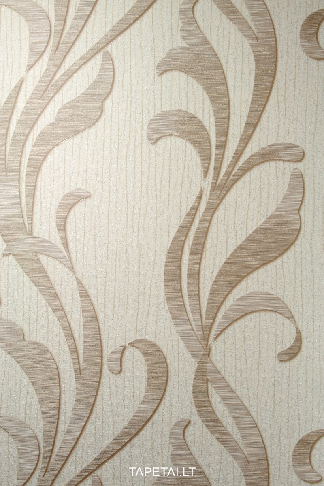

Tapetai | Dubingiai
 × Jūsų Filtras × MANO NORAI (0) KREPŠELIS (0) (0)Prekių nėra
Turi būti nustatyta Pristatymas 0,00 € Apsiuvimas 0,00 € VisoTęsti apsipirkimą Pirkti
Produktas sėkmingai įdėtas į krepšelį. Produkto pavyzdys sėkmingai pridėtas į krepšelį. Prekė parduodama pakuotėmis arba neardomais dydžiais, todėl jos kiekis buvo automatiškai padidintas iki minimalaus parduodamo kiekio. Kiekis Viso Krepšelyje yra 0 prekių. Krepšelyje yra 0 prekė. Krepšelyje yra 0 prekių. Krepšelyje yra 0 prekės. Krepšelyje yra 1 prekė. Prekės viso Apsiuvimas Viso Tęsti apsipirkimą Peržiūrėti krepšelį PRISIJUNGTI / Registruotis Menu Produktai KILIMAI Visi kilimai Modernūs kilimai Klasikiniai kilimai Ekskliuzyviniai kilimai Vaikiški kilimai Ilgo plauko kilimai Vintage / Patchwork Plokščio audimo Oda ir kailis Vonios kilimėliai BALDAI Visi baldai Amerikietiški baldai Svetainės baldai Miegamojo baldai Valgomojo baldai Lauko baldai Čiužiniai TAPETAI IR SIENŲ DANGOS Tapetai Užsakomi tapetai Vaikiški tapetai Fototapetai 3D tapetai Sienų dangos visuomeniniams interjerams Tapetų klijai ŠVIESTUVAI Visi šviestuvai Lubiniai šviestuvai Sieniniai šviestuvai Toršerai Staliniai šviestuvai Gaubtai INTERJERO AKSESUARAI / TEKSTILĖ Kalėdiniai papuošimai Visi aksesuarai / Tekstilė Namų dekoracijos Miegamojo interjeras Vonios interjeras Prieškambaris ir sodas Stalo serviravimo reikmenys DEKORATYVINIAI PROFILIAI Moldingai Karnizai lygiu profiliu Karnizai su ornamentu Karnizai paslėptam apšvietimui Grindjuostės Kampiniai elementai Lubinės rozetės Kolonos Ornamentai Durų aprėminimo elementai Židinio apdaila KILIMINĖ DANGA Namams Visuomeniniams interjerams KILIMINIAI TAKAI Visi takai Austiniai takai Siūtiniai takai Švaros zonos takai KILIMINĖS PLYTELĖS ŠVAROS ZONOS KILIMĖLIAI IR TAKAI Švaros zonos kilimėliai Švaros zonos takai LINOLEUMAS (PVC DANGA) Namams Visuomeniniams interjerams VINILINĖS GRINDYS (PVC LENTELĖS LVT) Namams Visuomeniniams interjerams PARKETLENTĖS GRINDŲ ĮRENGIMO MEDŽIAGOS IR AKSESUARAI Visos grindų įrengimo medžiagos Savaime išsilyginantys mišiniai Gruntas Klijai Įrankiai Grindjuostės Dvipusė lipni juosta Profiliai Užuolaidos Kolekcijos ir katalogai Namams Užuolaidos Tapetų kolekcijos ir katalogai Tapetų kolekcija „Pip studio 5“ Tapetų kolekcija „Carmen“ Fototapetų katalogas „1838 Wallcoverings“ Fototapetų katalogas „Inkiostro Bianco“ Tapetų kolekcija „Nordic compositions“ Tapetų kolekcija „Six Senses“ Tapetų kolekcija „Mini Me“ Tapetų kolekcija „Heritage“ Tapetų kolekcija „Avington“ Tapetų kolekcija „Camellia“ Tapetų kolekcija „Aurora“ Tapetų kolekcija „The Extinct Animals“ Tapetų kolekcija „Rosemore“ Tapetų kolekcija „Signature“ Tapetų kolekcija „Oculaire“ Tapetų kolekcija „Avalon“ Tapetų kolekcija „Stripes@Home“ Tapetų kolekcija „Figura“ Tapetų kolekcija „Stature“ Tapetų kolekcija „Lino“ Tapetų kolekcija „Vivid“ Tapetų kolekcija „Flamant Caractere“ Tapetų kolekcija „Metal X“ Tapetų kolekcija „Metal X Signum“ Tapetų kolekcija „Flavor paper“ Tapetų kolekcija „Curiosa“ Tapetų kolekcija „Focus“ Tapetų kolekcija „Takara“ Tapetų kolekcija „Sundari“ Tapetų kolekcija „Masterpiece“ Tapetų kolekcija „Oxymore three“ Baldų kolekcijos ir katalogai Amerikietiškų baldų katalogas „Meridien“ Baldų kolekcijos „Distinctions“ ir „Open Nights“ Baldų kolekcija „Upholstery“ Baldų kolekcija „AD Grantham Hall“ Baldų kolekcija „AD Modern Organics“ Baldų kolekcija „AD Modern Classics“ Baldų kolekcija „Harmonie“ Baldų kolekcija „Romance“ Baldų kolekcija „Domaine“ Kilimų kolekcijos ir katalogai „Ziegler“ ir „Ghaznavi“ kilimų katalogas Kilimų katalogas „Splendore di Venezia“ Kilimų katalogas „Linie design“ Kilimų katalogas „Romo/Villa Nova“ Kilimų katalogas „Vintage/Patchwork“ Kilimų katalogas „Palazzo“ Kilimų katalogas „Louis De Poortere“ Kilimų katalogas „Ligne Pure“ Kiliminės dangos kolekcijos ir katalogai „ROLS“ – ispaniška kiliminė danga Augalinių pluoštų kiliminės dangos katalogas Kiliminės dangos kolekcija „Smartstrand“ Kiliminės dangos kolekcija „Sensualite“ Kiliminės dangos kolekcija „My life story“ Kiliminės dangos kolekcija „Invictus“ Kiliminės dangos kolekcija „Haute Couture“ Kiliminės dangos kolekcija „Love Vintage“ Paslaugos Paslaugos susijusios su kilimine danga Užsakomoji kiliminė danga Aukšto pluošto kiliminės dangos apdaila Laiptų pakopų gamyba Grindjuosčių gamyba Apsiuvimas dekoratyvine juosta Apsiuvimas siūlu Išpjovimas pagal pateiktus matmenis Prekių pristatymas Salonuose esančių prekių nuoma Prekių užsakymas iš katalogų Grindų pagrindo įrengimas, dangos klojimas Individualaus dizaino kilimai Interjero dizaino sprendimai Įkvėpimui Lofto interjeras Lauko terasa Miegamojo interjeras Koridoriaus interjeras Darbo kambario interjeras Svetainės interjeras Valgomojo interjeras Įgyvendinti projektai Grindų danga Privatus namų interjeras NR.2 Privatus namų interjeras su „Agnės dizainas“ NR.2 „PIO PIO Pizza and Grill“ picerijos patalpos Klinikos „Belladerma“ patalpos Viešbučio „Vytautas Mineral SPA“ Birštone patalpos Parduotuvės/degalinės „Junasa“ vidaus patalpos Šiaulių Respublikinės ligoninės patalpos Privatus namų interjeras su „LavaProjects“ Nr.2 Viešbutis „Gradiali“ UAB „Kamida“ administracinės patalpos UAB „RD Signs" Reklamos gamybos įmonė Privatus namų interjeras su „Agnės dizainas“ Privatus namų interjeras su „LavaProjects“ Nr.1 Sporto baras ir restoranas „O`Learys“, PC „Akropolis“, Vilnius Sulčių baras „Blender“, PC „Akropolis“, Vilnius Privatus namų interjeras Šiaulių miesto savivaldybės posėdžių salės „Acme“ administracinės patalpos Laiptai iš kiliminės dangos privataus kotedžo interjere „Festo“ administracinės patalpos „Railana“ administracinės patalpos „Celsis" administracinės patalpos Didždvario progimnazija Įmonių bankroto administravimo ir teisinių paslaugų biuras Kiliminės plytelės „CUBE“ verslo centro biuro laukiamasis Kiliminės plytelės „ALSO Lietuva“ biure Vinilinė grindų danga „AMES“ kalbų akademijoje. Užuolaidos Projektas „Paupys“ su „Very good architecture company“ Dainavimo mokyklos „Dagilėlis“ interjeras su Edita Visockiene Privatus namų interjeras su dizainere Margarita Charčenko Privatus namų interjeras Šiaulių miesto savivaldybės posėdžių salės Užuolaidos, lovatiesė ir kilimas privataus buto interjere Tapetai, baldai, užuolaidos ir aksesuarai privataus namo interjere Užuolaidos „RADISSON BLU“ viešbutyje Sienų danga Tapetai privačiose/viešose erdvėse „PIO PIO Pizza and Grill“ picerijos patalpos Privatus namų interjeras su „LavaProjects“ Nr.2 Viešbutis „Gradiali“ UAB „Kamida“ administracinės patalpos Soliariumų studija PC „Tilžė“ Privatus namų interjeras su „LavaProjects“ Nr.1 Privatus namų interjeras, projektas „JAZZ'as“ Tapetai, baldai, užuolaidos ir aksesuarai privataus namo interjere Kilimai Projektas „Paupys“ su „Very good architecture company“ Privatus namų interjeras su dizainere Margarita Charčenko Privatus namų interjeras su „LavaProjects“ Nr.1 Sulčių baras „Blender“, PC „Akropolis“, Vilnius Privatus namų interjeras, projektas „JAZZ'as“ Užuolaidos, lovatiesė ir kilimas privataus buto interjere / TAPETAI IR SIENŲ DANGOS / Tapetai
Kraunama...
Tapetai
Tapetai – vienas iš klasikinių ir seniausių sienų dekoravimo būdų. Galimybė rinktis iš gausybės raštų, spalvų, medžiagiškumo, faktūrų leidžia namams suteikti norimą nuotaiką. Norite vasaros dvelksmo namuose – Jūsų pasirinkimui pastelinės ar ryškesnės gėlės. Imponuoja klasika – tiks damasko raštai, dryžiai, medalionai. Santūraus interjero gerbėja...
> >Tapetai – vienas iš klasikinių ir seniausių sienų dekoravimo būdų. Galimybė rinktis iš gausybės raštų, spalvų, medžiagiškumo, faktūrų leidžia namams suteikti norimą nuotaiką. Norite vasaros dvelksmo namuose – Jūsų pasirinkimui pastelinės ar ryškesnės gėlės. Imponuoja klasika – tiks damasko raštai, dryžiai, medalionai. Santūraus interjero gerbėjams - vienspalviai, faktūriniai tapetai. Išskirtinumo ieškantiems – tekstilinė, metalizuota, natūralaus pluošto sienų danga.
Flizelininiai, viniliniai, popieriniai, natūralaus pluošto tapetai - visi jie pasižymi puikiomis eksploatacinėmis savybėmis: atsparūs mechaniniam poveikiui, plovimui ir ultravioletiniams spinduliams.